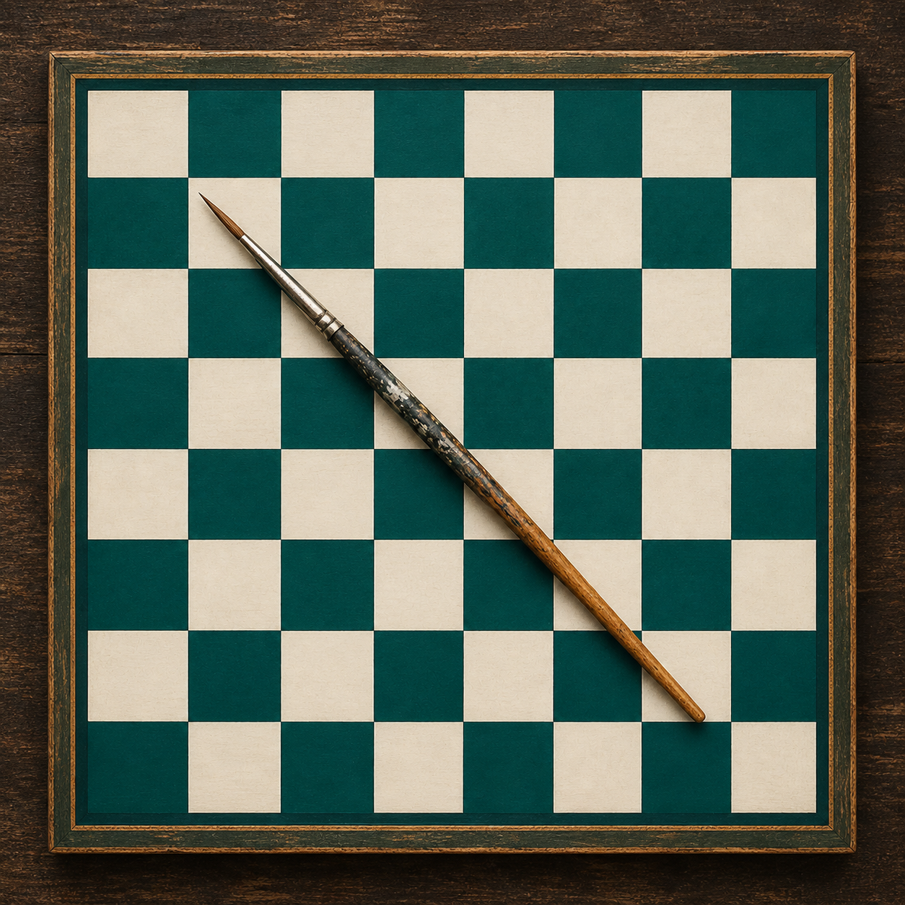
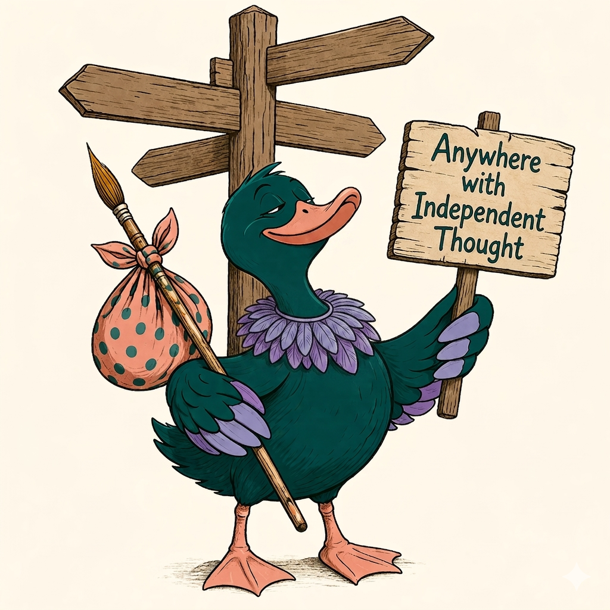

Where discipline meets imagination. The studio of a Captain who paints bishops, a cybersecurity director who makes glow-in-the-dark pawns, a professor who names a chess piece "Please don't call me Rose." Every object produced here is singular — conceived once, executed once, never repeated.
Cognitive sovereignty is not a brand concept — it is a way of living. It is the deliberate choice to examine your assumptions, question your inherited frameworks, and take genuine ownership of the conclusions you reach. It is the refusal to outsource your judgment to algorithmic convenience, institutional authority, or received wisdom.
Every object produced under this mark is an act of cognitive sovereignty: a decision made by one mind, executed by one hand, that will never be made again in precisely the same way. The blank piece is potential. The brush is the decision. The finished object is proof that the decision was made.
This is not a craft shop. It is an atelier. The difference is not in the objects — it is in the intention behind them.
Field artillery demands precision — the kind that cannot be approximated. You calculate the trajectory, account for the variables, and commit to the decision. There is no room for the vague or the approximate. That same discipline lives in every object produced under this mark. The piece is either finished or it is not. The decision was made deliberately or it was not. There is no in-between.
What field artillery shares with non-sequitur art is the willingness to arrive somewhere unexpected via a path no one anticipated. The shell follows physics. The painted gnome follows imagination. Both require the maker to fully commit to a trajectory and see it through.
Cognitive Sovereignty Studios exists in the space between those two imperatives — precision and imagination, discipline and freedom, the soldier and the artist. Neither alone is sufficient. Together, they produce objects that could only have come from this particular mind, this particular hand, at this particular moment.

Hand-painted, one-of-a-kind chess sets where no two boards are ever the same. Non-sequitur characters. Singular worlds.
Explore the collection
Hand-painted cruise and jeep ducks. Left with intention, found by fortune. Not all who waddle are lost.
Meet the drakes